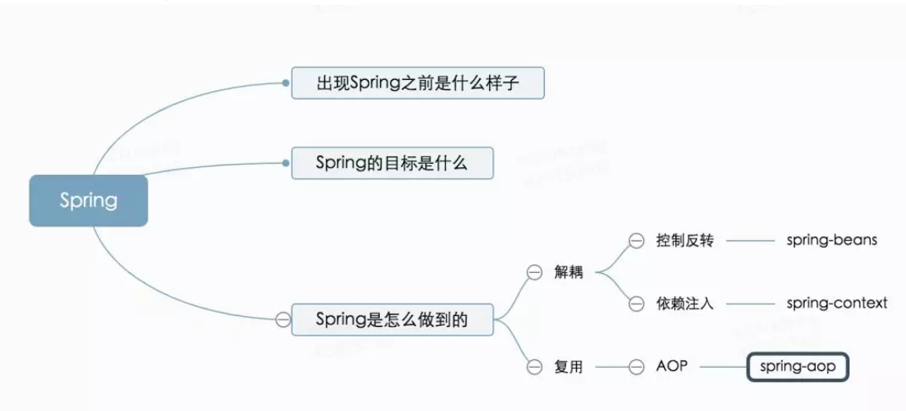

引子
很早之前听同事说：“要开会了。我都知道领导要问什么，就那几板斧。”其实领导之所以为领导，人家问的问题确实很合情合理，甚至可以说一针见血。而之所以能问出来这些合理的问题，就是因为头脑中有自己的思考框架。比如要做一件事情，一个思考框架就是：
1，我们现在是什么样的？
2，我们要做成什么样（解决什么问题、有什么收益）？
3，怎么才能达成（解决路径）？
根据这个思考框架，开会的时候，给领导做汇报，一上来就说我做了什么什么。领导自然要问：“做这件事情有什么收益？” 如果一项任务指标特别好，领导就要问了：“那我们是怎么做到的呢？”
这种框架式自上而下的思考习惯，对做任何事情都会有帮助。比如想学习Spring，就先问自己3个问题：
1，出现Spring之前是什么样子？
2，Spring的目标是什么？
3，Spring是怎么做到的呢？
出现Spring之前是什么样子
出现Spring之前，MVC这种设计典范已经开始兴起。在显示层、模型层和控制层都有了一些工具的支持。比如显示层有JQuery+JSON，模型层有ibatis，控制层有Struts。开发人员的主要精力应该放到业务逻辑的开发。但是开发前需要做一件事情：将MVC需要的这些东西组装起来。每个人在新搭建一个工程时都需要进行组装。那有没有一个东西把开发人员需要的东西都弄好了，开发人员只需要将精力用户业务逻辑开发呢？Spring就是为了解决这个问题而生。
Spring的目标是什么
Spring就是要最大限度的简化开发工作，让开发人员集中精力于自己的业务逻辑，也是DDD领域驱动开发。
Spring是怎么做到的呢
核心问题解决
1，解耦
开发人员希望聚焦DDD的开发，首先要解决的事情是我修改一个业务代码，不希望显示层、模型层和控制层都要改。不希望改一个类，依赖它的类也需要改。Spring为了应对这个问题使用了控制反转的理念。将所有的依赖都由框架注入到一个上下文环境中(DI)。在这个环境中，Bean之间可以自由的使用。
2，复用
有了DI（依赖注入）的支持，开发人员可以具体聚焦DDD的开发了。一个优秀程序员的最大的美德是懒惰。一些逻辑，比如日志，鉴权，很多地方都需要用到。这个业务逻辑关系又不是很紧密，代码基本上就是拷贝一下。那怎么能将这些业务特点不强的逻辑从开发人员的工作中剔除掉呢？这就用到了AOP(面向切面)编程。以上Spring要解决的核心问题解耦和复用的解决方案就是Spring的核心：控制反转、依赖注入和AOP。
核心功能实现
为了将Spring的核心功能实现出来，就需要用到Robert Martin提出的SOLID原则。分别是单一职责、开放封闭、里氏替换、接口隔离和依赖倒置。控制反转、依赖注入和AOP，分别对应了三个spring的jar包：spring-beans、spring-context、spring-aop。每个包单一的负责一个核心功能的实现。这些都需要先做对象的实例化，这个功能由spring-core这个jar包来实现。在Spring-beans中，Spring使用工厂模式来管理程序中使用的对象Bean。每个Bean实例以BeanDefinition的形式被创建，通过java的反射机制将需要初始化的字段写入，最终保存在BeanDefinitionMap中。这整个过程由容器来实现，完成了控制反转。有了控制反转，开发者可以通过调用getBean获取到所需要的对象。spring-context提供文件列表的读入，将所有依赖的Bean放到一个Context中，就是常说的依赖注入。AOP的主要作用是不通过修改源代码的方式将功能代码织入来实现对方法的增强。实现的关键在于使用了代理模式。代理主要分为静态代理和动态代理。静态代理最简单的实现就是创建一个代理类，将对象new出来之后，在调用方法前后都加上代码。调用方调用代理类而不直接调用原始类。动态代理主要是JDK动态代理和Cglib动态代理，这里就不详细展开了。
总结
本文从技术上，只介绍了Spring框架部分的核心功能。大家可以按照这个思路继续将其他部分纳入体系。当然，本文用的思考框架也只是思考框架的一种，是偏产品化的一个视角。完全可以用偏技术化的视角比如：「是什么、为什么、怎么办」的思考框架，只要保持一个风格、梳理成体系就好。以上Spring相关的部分，用一张图总结如下

温故知新